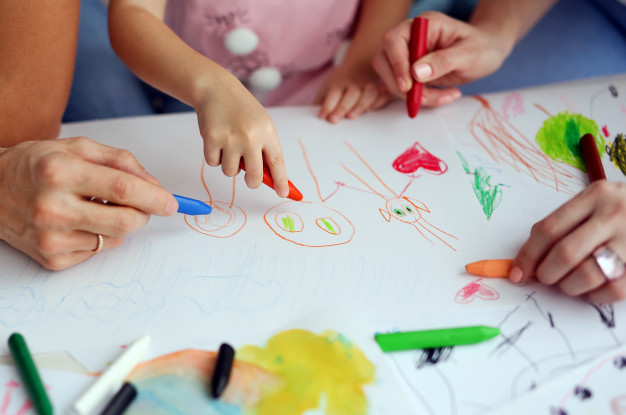

Aprendizado
Jogos educativos são plataformas de aprendizado, onde o aluno aprender através da busca, da descoberta e do raciocínio lógico, praticando a cognição.
Desenvolvimento
Aprender jogando influência grandemente no desenvolvimento da criança. Através do jogo, a criança aprender a agir, adquire autoconfiança.
Disciplinas
Os jogos educativos, quando bem preparados, são estratégias pedagógicas eficazes para a construção do conhecimento. Quando usado nas diversas disciplinas.